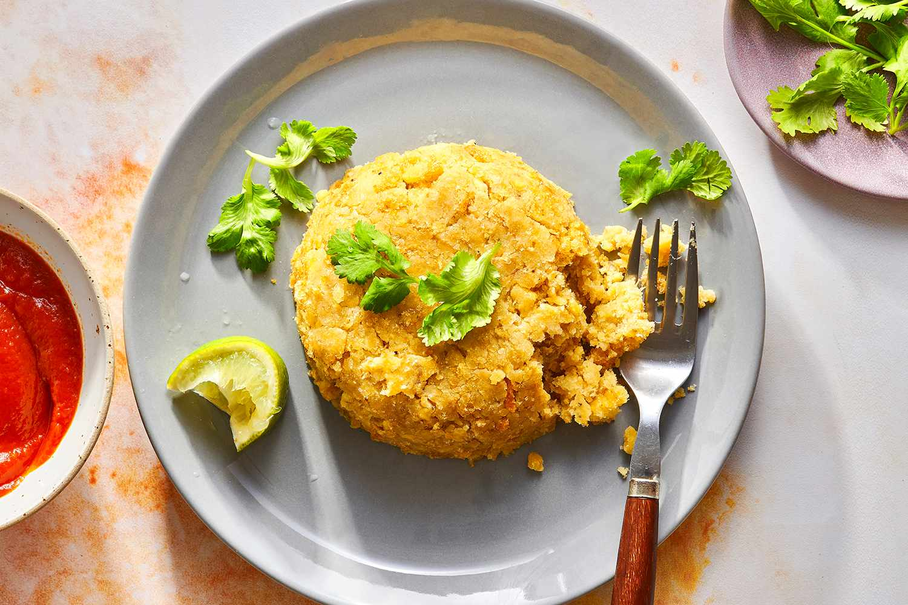

Home
Mofongo

Description
An afro-puertorrican dish with origins traced back to Africa's Fufú.
At its most basic, mofongo is made of fried green plantains mashed with garlic
and chicharrones (deep-fried pork skin),
served with a buttery-garlic or a peppery capsicum-tomato
Creole sauce.
Ingredients
- 3 Canola oil for frying
- 3 Cloves garlic, or to taste
- 3 Tablespoons olive oil
- 1/8 Cup crushed fried pork skins
- 2 Green plantains, peeled and sliced into 1/2-inch rounds
- Salt to taste
Steps
- Heat canola oil in deep fryer or saucepan to 350 degrees.
- Mash the garlic with the olive oil in a mortar and pestle.
- Combine garlic mixture with the pork rinds in a large bowl; set aside.
- Fry the plantain chunks until golden and crispy, but not brown, about 15 minutes.
- Transfer the fried plantains into the bowl with the garlic mixture. Toss to coat.
- Mash the coated plantains with the mortar and pestle until smooth.
- Season with salt.
- Roll the plantain mixture into two large balls or several small balls before serving.